尚未踏入过的世界 | 画意文心-返景 「展览&访谈」
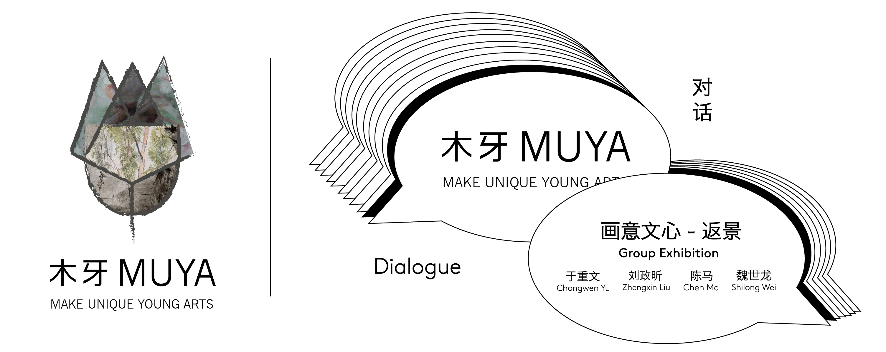欢迎来到木牙Make Unique Young Arts，让我们来探索心中属于自己的那份风光～
夏日在眨眼之间悄悄的遛走，而景色如画一般的秋天随之慢慢的走来。每个人心中都有着属于自己的那份风光，它们可以来自对于生活的回忆，朦胧的内心感受与现实的交合，本我与自我对自然的真切感受，以及内心对于生命的感悟。当这些景色经过思想的过滤，艺术的渲染。它们成为了一道新的独特光景。
Summer quietly left in the blink of an eye, while the autumn comes slowly. Everyone has his own scenery in their mind, which could come from our memory of life, the combination of feeling from both virtual inner and reality, the real feeling of nature between id and ego, and the inner perception of life.When these scenes are altered by our thoughts and rendered by the art. They are becoming a new and unique scenery.
画意文心-返景
唯一有吸引力的世界是尚未踏入过的世界-马塞尔.普鲁斯特。今天我们有幸邀请到了于重文，刘政昕，陈马 ，魏世龙来到木牙MUYA。和大家一起跟随他们回到那一道道独特光景，游览那些从未被他人踏入过的风景。
The most attractive world is the one that we have not yet been entered - Marcel. Proust. This section, We are honored to have Yu Chongwen, Liu Zhengxin, Chen Ma, Wei Shilong here at MUYA. Let’s follow them together and back to their unique landscapes and see places that no one else has ever seen before.
🌵🌵🌵

于重文
男 1984年生于丹东; 2007年毕业于鲁迅美术学院油画系第一工作室; 现工作生活于北京
Chongewen Yu
Male, was born in Dandong in 1984.; He graduated from the first studio of Oil Painting Department of Luxun Academy of Fine Arts in 2007.; He stays and works in Beijing now.
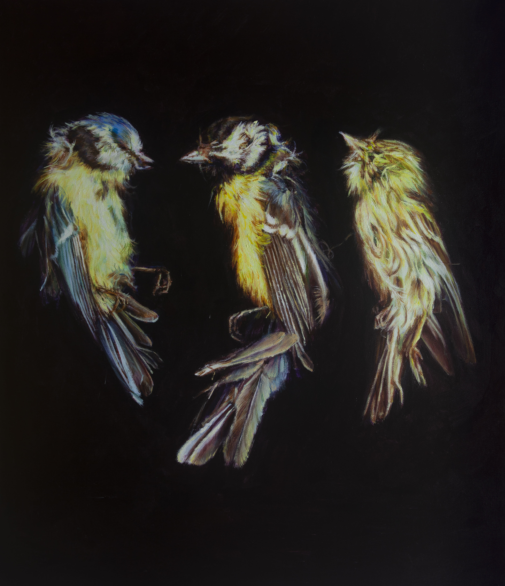

➤ 木牙MUYA:以《他们睡着了》这部作品为例，颜色鲜明精彩呈现出了生命感，是死亡的另一种诠释。您是如何看待用鲜活的颜色来表现死亡的恐惧或者宁静？
Take "They Fell Asleep" as an example. The vivid and wonderful color presents a sense of life, which is another interpretation of death. What do you think of the use of vivid colors to represent the fear of death or tranquility?
于重文:死亡是今人避讳的，我也如是。但又着迷于生命逝去的瞬间呈现出令人震撼的状态。绘画的表达方式很有限，《她们睡着了》是用一种偏写实的装饰画手法呈现的一幅画，也许是依依不舍，自我欺骗让心灵得以平静。
Death is taboo for most people, and so am I. But fascinated by the moment when life is lost takes on a state of shock. The expression of painting is very limited. "They Fell Asleep" is a painting presented with realistic decorative painting methods. It may be is reluctance on, but also is self-deception to calm the soul.
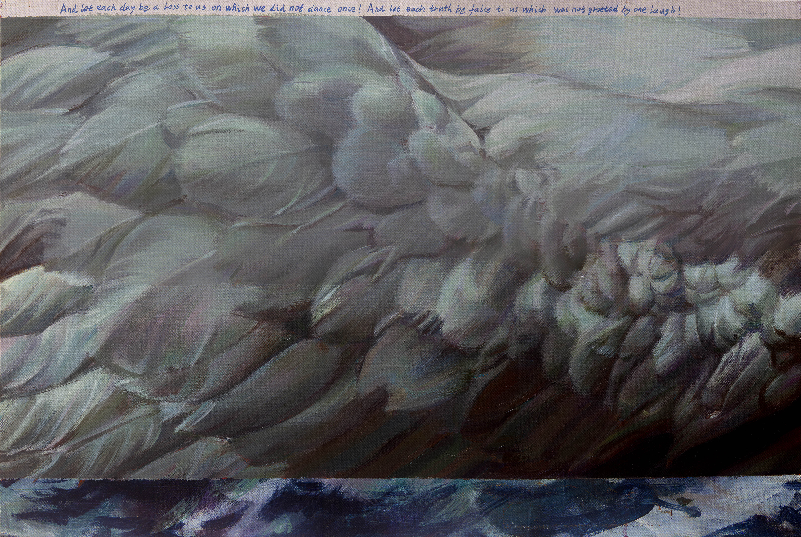
➤ 木牙MUYA:光看您的画作，朦胧，透光，具有极大的写意色彩.画面中频繁出现了动物的身影。与您网站上的女性画作不同. 是什么让您改变角度开始关注在鸟类和羽毛？是否有某种暗示？而单独的雕塑画作又代表了什么？
Look at your painting, hazy, transparent, with great impressionistic colors. There are frequent images of animals in the painting. This is different from the paintings about women on your website. What made you change your perspective and start focusing on birds and feathers? Is there a hint? And what do individual sculptures and paintings represent?
于重文:动物题材是我最新的一批作品 还在延续。画女孩、花是因为喜欢。画动物也是如此。画画是讨自己开心的一件事，我并不十分注重今天要画什么。一个画者更关注的是画面本身的东西，过多的解释作品的叙事性和所谓的表达会使得歧义丛生，这不是我该做的。如果非要说点什么，画雕像是对大师的一种致敬，在学画之初经常临摹大师的作品。深得体会，看一千遍画做不如临摹一遍，那是一种用大师的眼睛观察世界的奇妙体验，你能在调色盘上找到穿越时空，时间重叠的感觉。我在之前画过一张很大的雕塑群像，心情激动，整个过程畅快淋漓。甚至看见了在巴黎歌剧院看原作时都发现不了的细节。那种心里惬意的感觉是我难以用语言表达出来的。
Animal themes are my latest batch of works and are still continuing. I paint girls and flowers because I like them. The same goes for painting animals. Painting is a thing that pleases me. I don't pay much attention to what I want to paint today. A painter pays more attention to the picture itself. Too much explanation of the narrative and so-called expression of the work will make ambiguities, which is not what I should do.
If I have to say something, painting a statue is a tribute to the master. At the beginning of learning painting, I often copy the master's work. I have a deep understanding. It is better to copy a painting once a thousand times. It is a wonderful experience of observing the world with the eyes of a master. You can find the feeling of crossing time ，space and overlapping time on the palette. I drew a large group of sculptures before. I was very excited and the whole process was fun. I even saw details that I couldn't find when I saw the original work at the Paris Opera. The feeling of comfort in my heart is difficult for me to express in words.
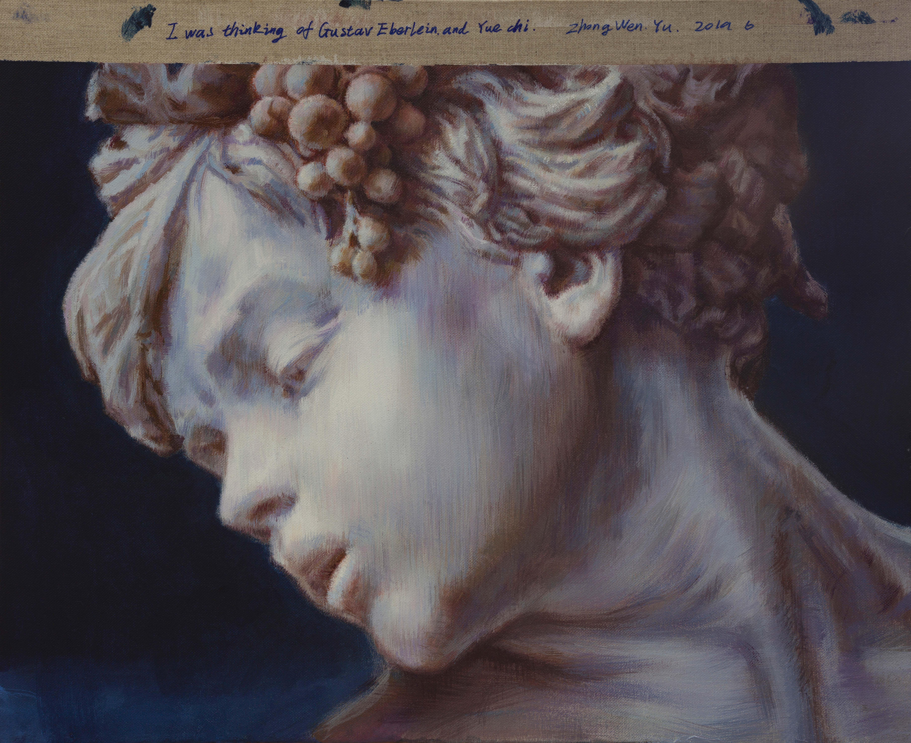
🍃🍃🍃
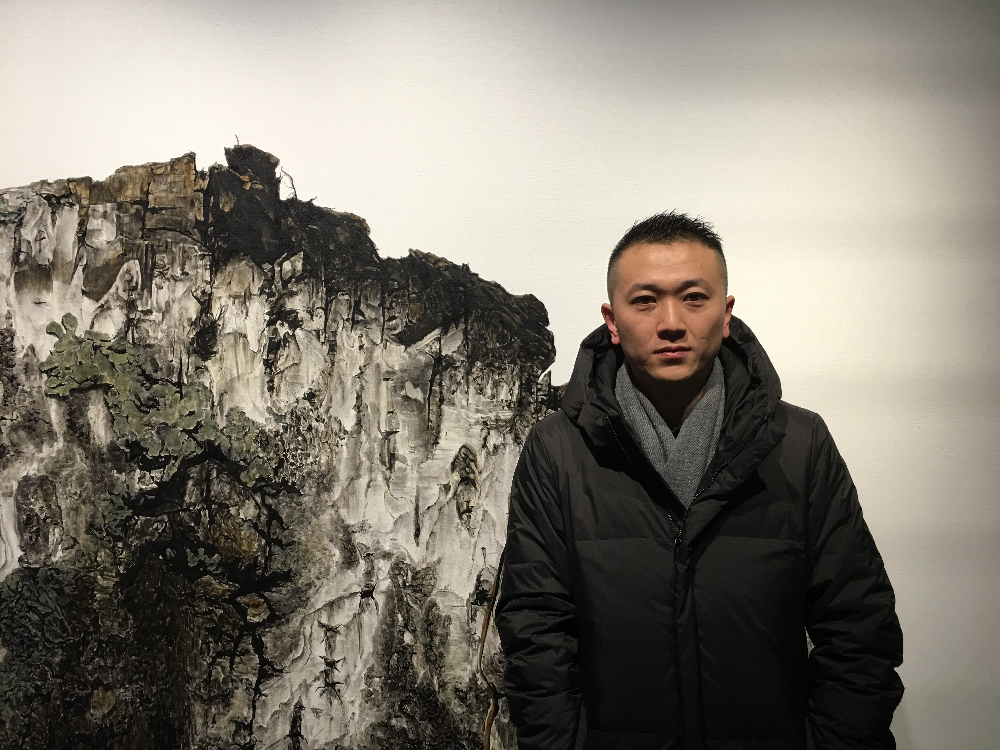
刘政昕
1983年生于吉林省汪清县; 2006年毕业于吉林艺术学院美术学院油画专业; 2009年就读吉林艺术学院美术学院绘画专业硕士研究生; 2010~2013年学习创作于导师方力钧先生宋庄工作室劲草空间; 现生活于北京.
Zhengxin Liu
Born in Wangqing town, Jilin Province in 1983. In 2006, he graduated from the Painting major of Jilin College of The Arts. In 2009, he studied as a master of painting in Jilin College of The Arts. From 2010 to 2013, he studied and created in Jingcao Space studio of tutor Fang Lijun in Songzhuang. He lives in Beijing now.
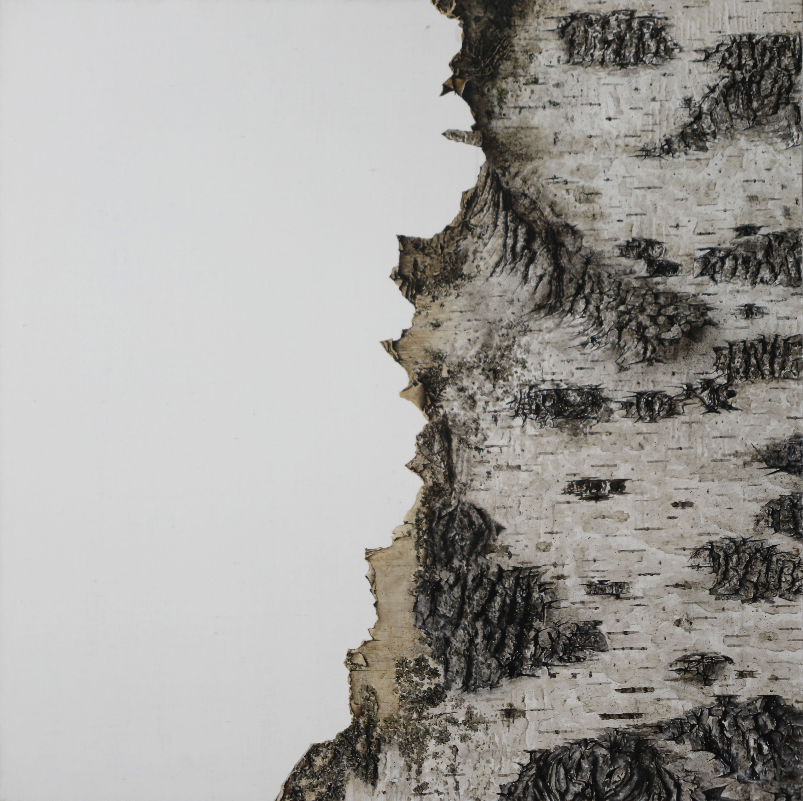
➤ 木牙MUYA:您一直在尝试不同的画面呈现方式，很多都和中国传统绘画的山水有关。 我很好奇，在您看来，如何定义您所呈现的宏观世界的呢？是内心的一种宏观创想，还是展现出来给观者创造出来的一种宏观感受？
You have been experimenting with different ways of displaying paintings, many of which are related to the landscape of traditional Chinese painting. I am curious, in your opinion, how do you define the macroscopic world you present? Is it a kind of inner macroscopic creation, or a kind of macroscopic feeling created for the viewer?
刘政昕:其实在我看来，微观世界就像是宏观世界的一个缩影，它们表现出来的存在其实取决于我们把观测点放在哪里。虽然一直在画油画，但从小开始练习书法使得我对于传统的中国山水画有着很深刻的视觉记忆，所以才会把这样一种自然纹理中山水画的气质呈现出来。
In fact, in my opinion, the micro world is like a microcosm of the macro world, and the existence of them depends on how we place our observation point. Although I have been painting oil paintings, I have been practicing calligraphy since I was a child has given me a deep visual memory of traditional Chinese landscape paintings, which is why I present the temperament of such a natural texture of landscape paintings.
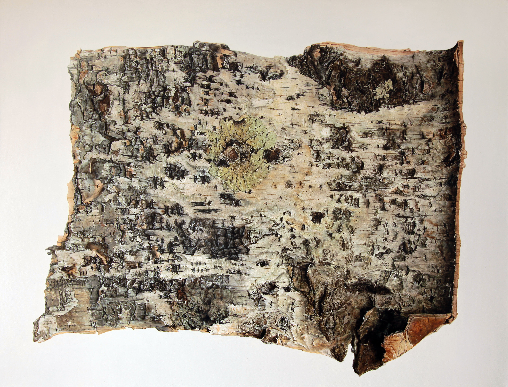
➤ 木牙MUYA:树皮是您对于微观和宏观世界的缩影，每张树皮都代表着一个世界，一个宇宙，或者一种风景...在自然科学里我们生活的世界被称为中观世界，在您看来，树皮这个媒介在用布面油彩的绘画方式呈现的过程中，它的功能性 / 角色扮演是如何发生转变的呢？
The bark is your epitome of the micro and macro world. Each bark represents a world, a universe, or a landscape... In natural sciences, the world we live in is called the middle world. Now, how has the function/role-playing of the bark medium been transformed in the process of painting with oil on canvas?
刘政昕:我画面的内容取材于自然界的形象，北方的树木肌理，它们由许许多多我们肉眼看不到的微观世界的生命构成，也许这就是天造地设吧，它们生长出的造型与中国的传统绘画的艺术形象是那么的不谋而合，无论是构图还是内容形式，都包含了无数种的变化和可能性。所以对我而言，一面是对大自然的敬畏，一面是对传统绘画的膜拜，我只是一个传递者，变换了一种媒介，把它们放在画布上而已。
The content of my painting is based on the image of nature. The texture of the trees in the north is made up of many lives in the micro-world that we can't see with our eyes, maybe this is the creation of nature, the shapes they grow out of, and the artistic images of traditional Chinese paintings. It is so coincident, whether it is the composition or the content form, it contains countless kinds of changes and possibilities. So for me, one side is the awe of nature and the other side is the worship of traditional painting. I am just a transmitter, changing a medium, and putting them on the canvas.
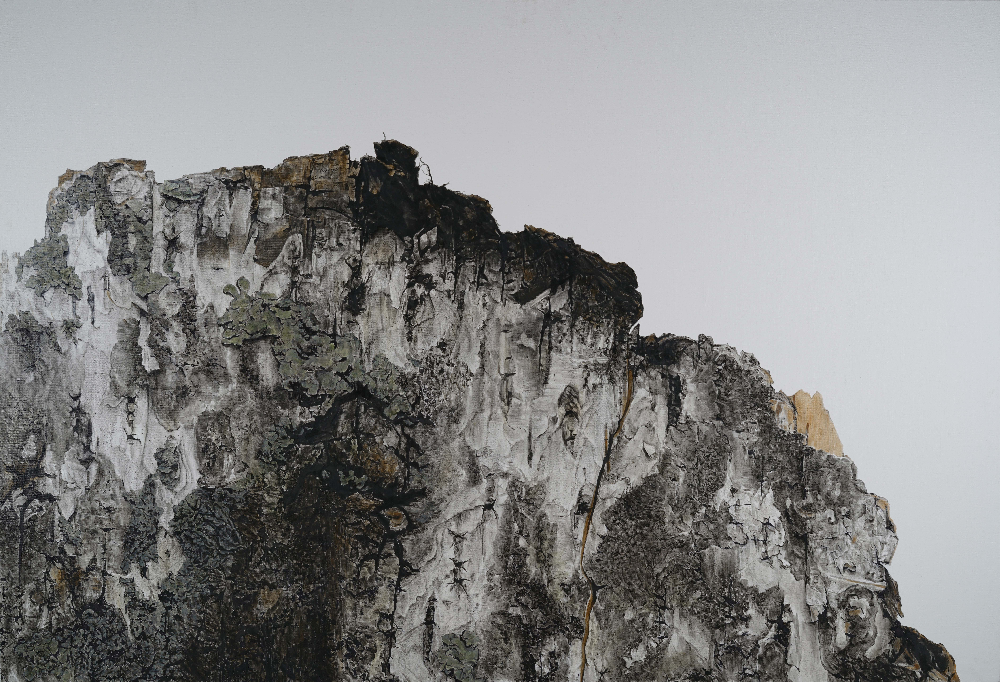
🌿🌿🌿
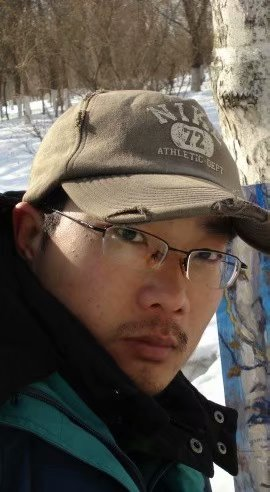
陈马
1981年生于吉林; 2006年, 毕业于吉林艺术学院; 2006年, 长春南湖画展; 2007年, 北京草场地画展; 2007年, 创立渡兰工作室; 2013年, 北京宋庄艺术节; 2019年, 第二届“锦绣中华杯”全国书画艺术大赛; 2019年, 北京宋庄艺术节“快买艺术”; 2020年, “发现宋庄”写生邀请展
Chen Ma
Born in Jilin in 1981.He graduated from Jilin College of the Arts in 2006.
Nanhu Painting Exhibition, Changchun in 2006. Caochangdi Art Exhibition, Beijing in 2007. Founded Duolan Studio in 2007. Songzhuang Art Festival, Beijing in 2013. The second "Splendid China Cup" National Painting and Calligraphy Art Competition in 2019. Songzhuang Art Festival "Quick Buy Art", Beijing in 2019. "Songzhuang Discovery" Invitational Exhibition of Sketching from Life in 2020. painting Wenxin "Return to The Scene" exhibition of four contemporary Paintings in 2020.
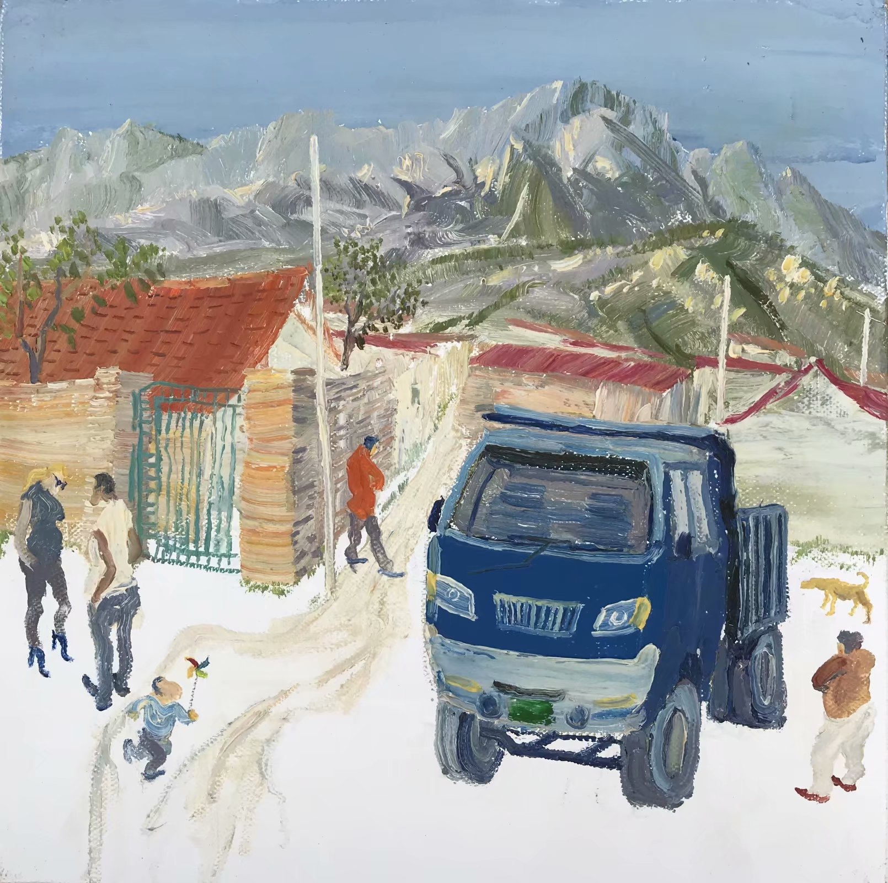
➤ 木牙MUYA:在采风绘画的过程中，自然风光是在不断变化的，天上飘动的云，不断转变的光线，您在创作的过程中，是怎样在短时间之内捕捉颜色，定格美丽世界的瞬间场景的呢？
In the process of collecting and painting, the natural scenery, clouds in the sky, and light are constantly changing. In the process of your creation, how do you capture the colors in a short time and freeze the momentary scenes of the beautiful world?
陈马:正如您所说，自然界是不断变化的，若是画面和描绘对象一一对应的审美观来描绘，那肯定是不现实的。好在油画是一种通过颜料这种媒介来表达作者感受的艺术。每次面对自然风光，我会首先有一种感受，然后所有进入眼帘的视觉现象都为这种感受服务，再以笔，色，油等画材加以实现。我定格的不是色彩和瞬间场景，而是感受。
As you said, the natural world is constantly changing, and it would definitely be unrealistic if the picture and the object to be depicted correspond to the aesthetics. Fortunately, oil painting is an art that expresses the author's feelings through the medium of paint. Every time I face the natural scenery, I will first have a feeling, and then all the visual phenomena that come into my eyes serve this feeling and then realize it with a brush, color, oil, and other painting materials. What I freeze is not color and momentary scenes, but feelings.
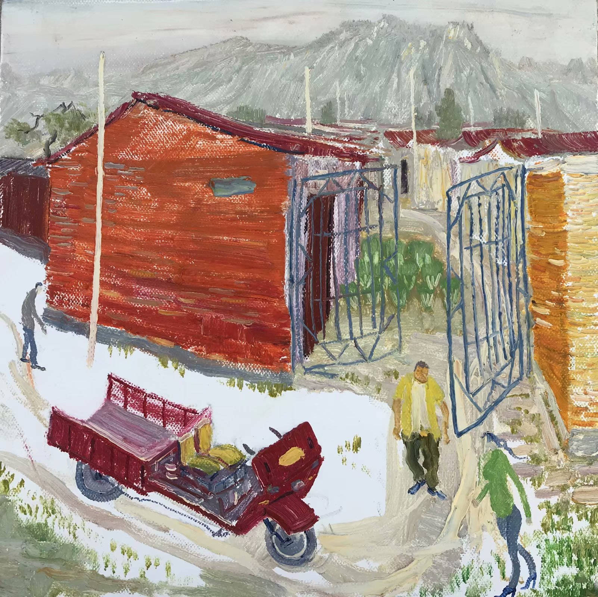
➤ 木牙MUYA:画乡村生活的画作有许多，您的独特之处在哪?自己擅长的领域和自己喜欢的事物在通过生活的过滤后形成您现在的风格，您是否想通过画作得到真正意义上的改变？还是说画作只是在回味记忆中的美好？
There are many paintings of country life. What is unique about you? Your field of expertise and things you like and form it becomes your current style after filtering through life. Do you want to get a real change through your paintings? Or is it the paintings that are just reminiscent of the beauty in memory?
陈马:我觉得我的独特之处在于感受，每个人的感受都是不同的，这也是每个人的风格，我擅长的和喜欢的都是绘画，二者结合一起，我一直在感受我生活的世界，并通过绘画这一方式表达出来。
I think my uniqueness is my feeling. Everyone’s feelings are different. This is also everyone’s style. What I am good at and what I like is painting. Those things combine together are what I have been feeling in the world where I live. And I will express it through my painting.
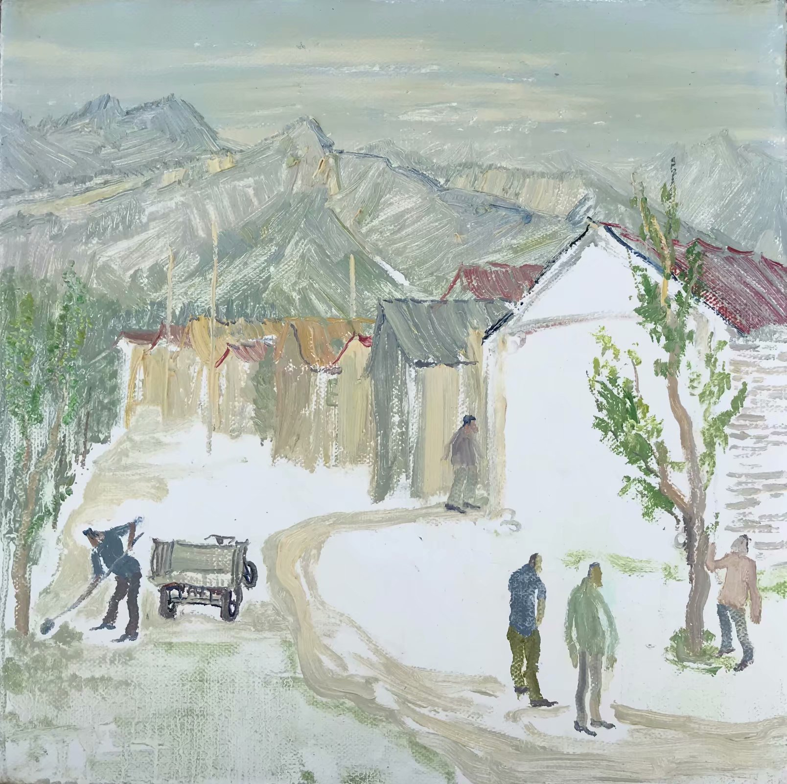
🌾🌾🌾
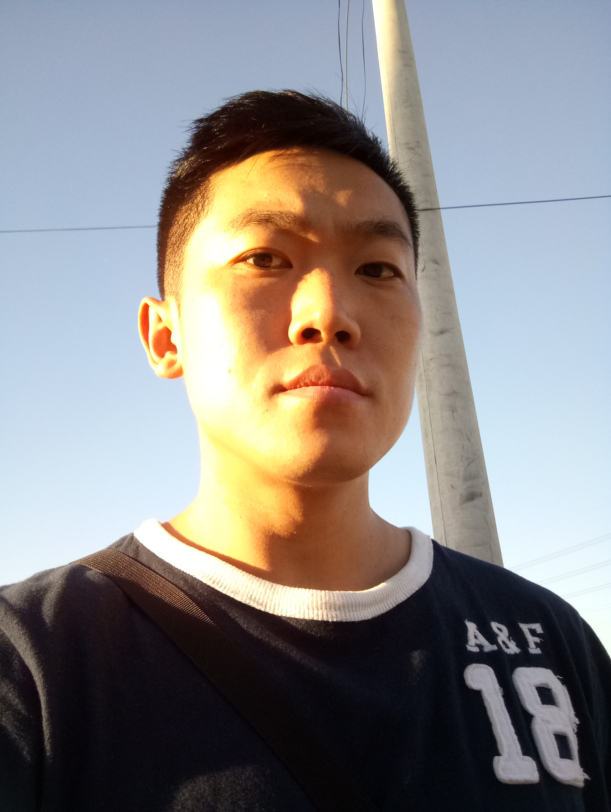
魏世龙
1983年出生辽宁省抚顺市; 2006毕业于吉林艺术学院油画专业; 现工作和生活在北京
Shilong Wei
Born in Fushun, Liaoning in 1983.He graduated from the oil painting major of Jilin College of The Arts in 2006. He lives and works in Beijing.
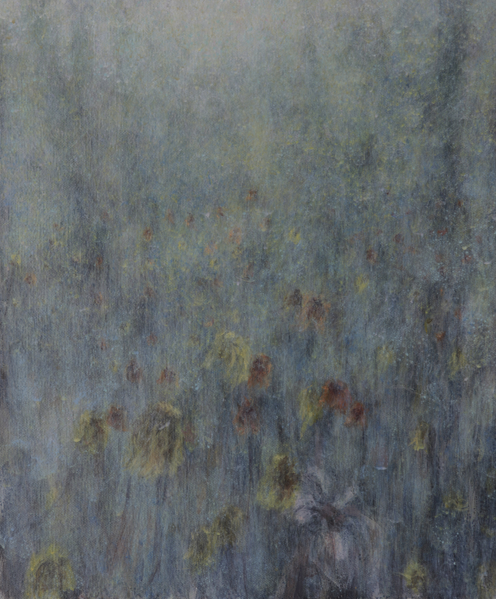
➤ 木牙MUYA:您的画作都是带有一定朦胧感和不确定性的.就像梦境一般，那您的作品场景是真实经历过的生活写照，还是您幻想中的场景？
Your paintings are all with a certain sense of haziness and uncertainty. Just like dreams, are the scenes of your works a portrayal of life you have experienced, or you are fantasy scenes?
通过颜色的反复堆积进行创作，营造出朦胧场景的画面感。从观者角度，您的画作有一种极速场景下的定格呈现的感觉，我很好奇您是怎样看待自己画作朦胧的风格的呈现的呢？
Your paintings are created by the repeated accumulation of colors for creating the sense of a blurred scene. From the viewer's point of view, your paintings have a feeling of freeze-frame presentation under extreme speed scenes. I am curious how you view the blurred style of your paintings?
魏世龙:我觉得这是两个好问题，我可以一起回答。首先我认为作品一定是跟生活有关的，我和我的生活加在一起就有了我的感受，而作品就是有了感受以后的表达。一切脱离自我的表达都是失去灵魂的表达，即使是幻想也需要幻想的来源，我无法理解凭空出现的某种东西，当然这可能超出了我的认知范围，并没有说那一定是不存在的。
I think these are two good questions, and I can answer them together. First of all, I think that the work must be related to life. I and my life add up to give me the feelings of myself, and the work is the expression of feelings. All expressions that are out of self are expressions that have lost their souls. Even the idea of fantasy requires a source. I cannot understand something that pumps out without any reason. Of course, this may be beyond the scale of my cognition, and I did not say that it must not exist.
我经常会被一些美丽的事物所打动，可能是一个清晨的远山，也可能是一片茂密的树林，或者是一片凋残的野花、一个美丽的姑娘。这种美好让人感动，可是美好的东西却是转瞬即逝的，就像今天下午天空中出现的那两道彩虹和傍晚的火烧云，很美，也很短暂！从时间的角度上他们消失了，但在精神里却是定格，变成了一种感受和记忆，这种记忆是区别于摄影的，更多的加入了我个人的情感，那些快乐和痛苦的情绪也夹杂在里面了。当我再次回忆起那段感受，更多的是情绪。 我并没有刻意的营造一个朦胧的画面，我要控制的是视觉效果，符合当下情绪的一个合适的视觉效果，打动我。画面本身所能承载的内容很有限，我的叙述是比较开放性的，我希望画面是“活的”，看画的人有自己的情绪，有自己的理解，画面绝对不是唯一的一个意思，在不同的情绪下也会有不同的理解吧。
I am often moved by some beautiful things. It may be a distant mountain in the early morning, it may be a dense forest, or it may be a piece of withered wildflowers or a beautiful girl. This kind of beauty is touching, but the beautiful things are fleeting, just like the two rainbows that appeared in the sky this afternoon and the burning clouds in the evening. They are beautiful and short-lived! From the perspective of time, they disappeared, but they are frozen in the spirit and become a kind of feeling and memory. This kind of memory is different from photography, and more of my personal emotions, those are my happiness and pain. Those emotions are also mixed in my work. When I recalled that feeling again, there was like a memory with more emotion in it.
I did not deliberately create a blurred image, what I want to control is the visual effect, a suitable visual effect that matches the current mood, and moves me for mine creation. The content that the picture itself could carry is very limited. My narrative is very open. I hope that the picture is "living". The viewers have their own emotions and understanding of the painting. The picture is definitely not the only meaning. There will be different understandings of different emotions.
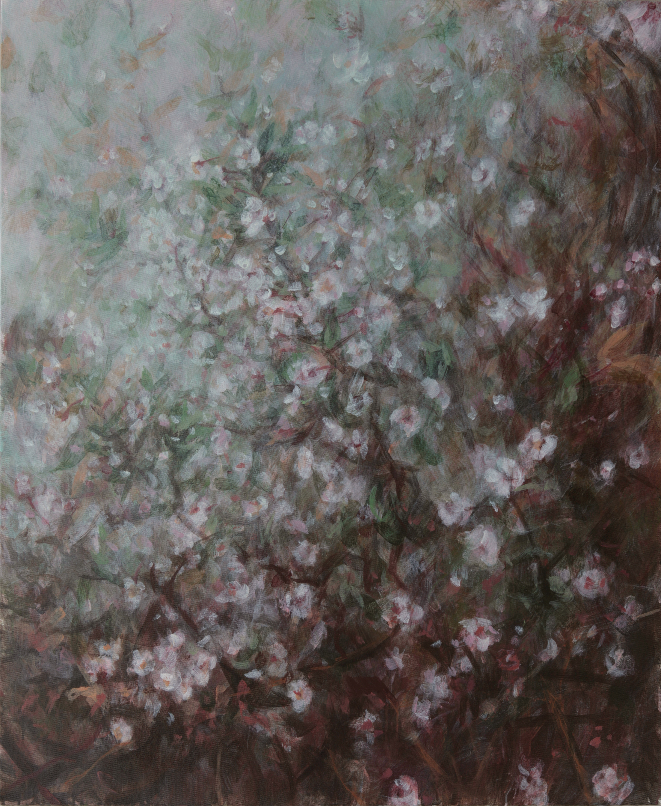
➤ 木牙MUYA:您的创作周期是多长呢？您是如何看待当下艺术作品流入市场后成为拍卖的商品的现状的呢？
How long is your creative cycle? How do you see the status quo of artworks that have become auctioned goods after they have entered the market?
魏世龙:我先回答第一个问题，我经常是几张画一起画，在一两个月的时间里同时画三到五张画，一张画画久了会没有感觉，这样可以换一换脑子，也能提高效率。平时如果有啥好的想法先记录下来，不着急画，过一段时间如果还是有感觉那就可以动笔了。至于艺术品流入二级市场这个问题我也没有什么发言权，只是希望真拍越来越多，假拍越来越少吧。
Let me answer the first question first. I often paint several pictures together. I paint three to five pictures at the same time in a month or two. After I focus on a painting for a long time, I don’t feel anything, so I can change my mind and switch to another. It can also improve efficiency. If I usually have any good ideas, I will write them down first, don't worry about drawing them, and if the feel still there after a while, I will start painting them. As for the inflow of art into the secondary market, I haven't things to say. I just hope that there will be more and more real shots and fewer fake ones.
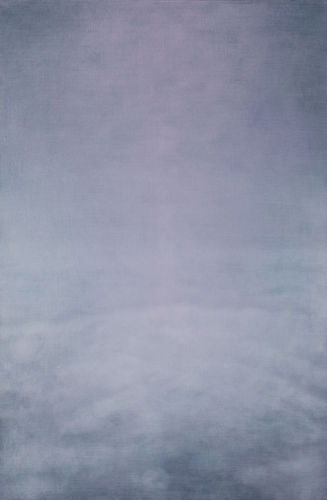
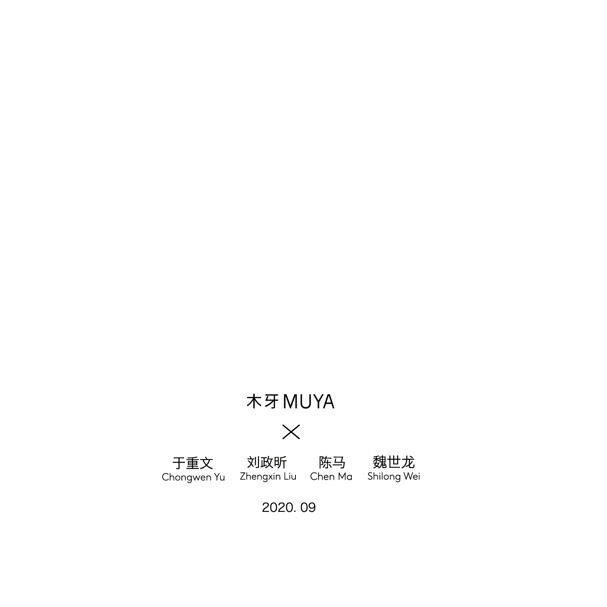
所谓“美”，不过是人类的一种认知范式，标准并非总是一成不变。它不能被简单概括为体重计上的数字，而是关于健康、自信、力量和光芒，关于感受爱、看见诗，关于一切闪耀却轻易溜走的细节，关于生命本身。— 画意文心-返景(座右铭）
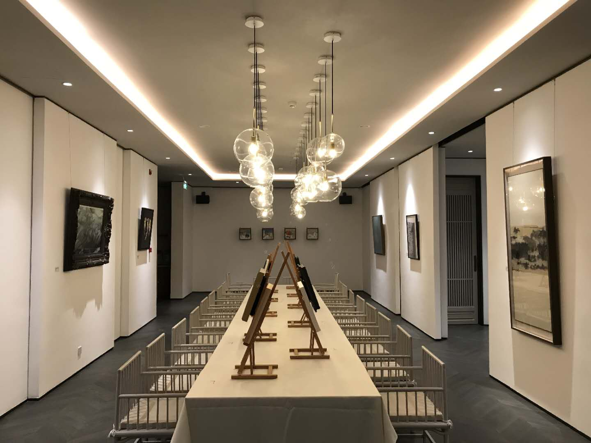
展览地址&时间 \ Exhibition Address & Time
✤ 日期: 8月29日（正式开幕）/ Aug.29 open night
✤ 内容: 画意文心-“返景”四人油画作品展
✤ 地址 / Address: 北京市东城区沙滩路的玺庭空间
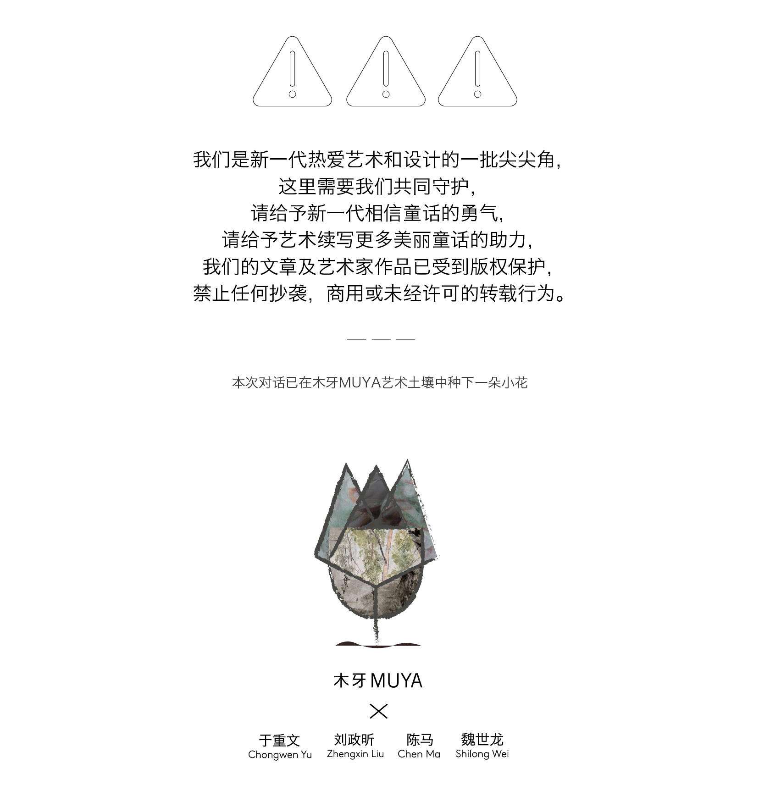
木牙微信订阅号